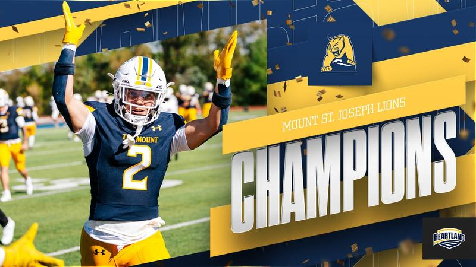

Program Overview
The Mount St. Joseph Lions compete in NCAA Division III football and are part of the Heartland Collegiate Athletic Conference(HCAC). The team has won multiple conference titles and regularly competes in postseason play.
Championship History
The Mount St. Joseph Lions have won multiple HCAC conference championships, including titles in 2022, 2023, and 2024.
